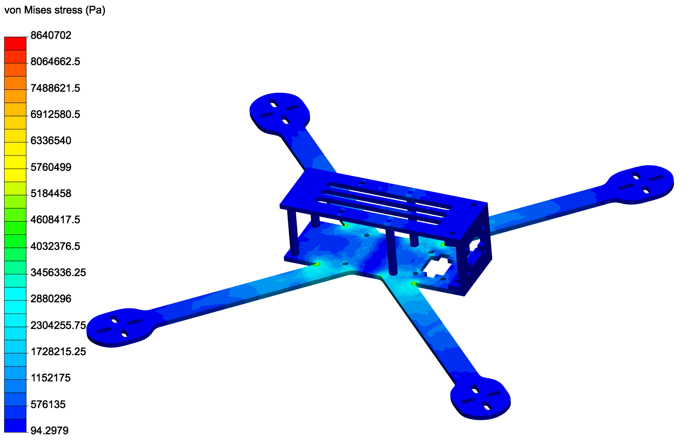

For my first full-time co-op, I interned as a Software Engineer at JABT Labs, a Vancouver startup developing Flow, a programming language for artists. Flow is a groundbreaking technology and hence receives funding as an innovative project from CMF.
After my term was completed, I was asked to stay on as a part-time employee and worked for the following months of my academic term.
As the Flow team was relatively small (two senior engineers and two students), I had responsibilities spanning the entire scope of the project. This included rapid de of features, building and maintaining test infrastructure,
Flow 1.0 was released in August 2018, right at the end of my time at JABT Labs, and multiple updates were released during the months before this - about a release every two weeks at its busiest. Because of this, I was responsible for rapid feature development and maintenance/bugfixes.
Upon my arrival to the company, Flow was a very new project and had lackluster test coverage. As such, I created and maintained much of the (back-end) testing infrastructure for the project.
There are a few contributions I made to the project worth special mention:
Developing, testing, and redesigning the keyvalue operations within the timeline.
Writing a release script to reduce release time by 97%.
Writing a release script to reduce release time by 97%.
I had slight reservations over mounting hole placement compromising the strength of the drone frame. However, after a brief stress analysis under expected loads, it became clear that this was not a significant issue. ***Insert stress analysis here***
You can view my model here here.